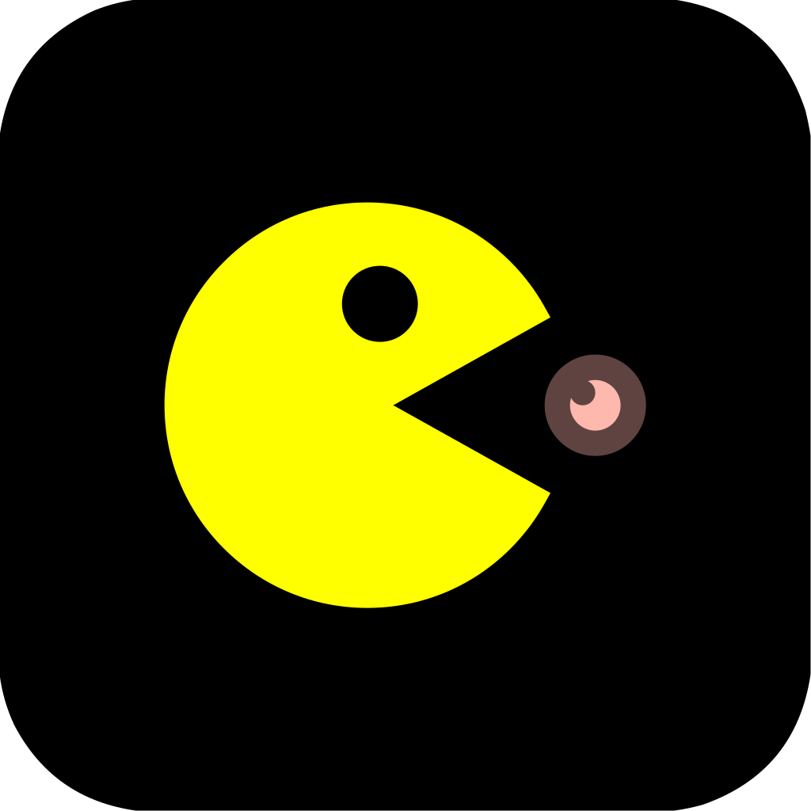
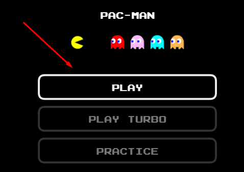
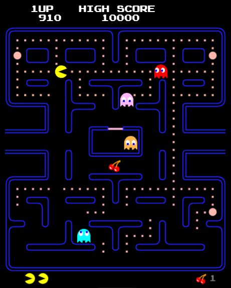
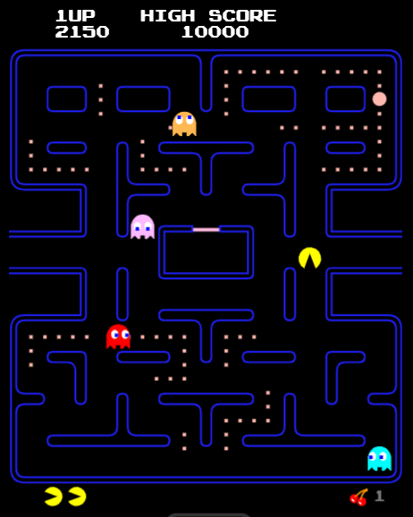

Easy to Learn
Pac-Man is incredibly easy to learn, making it accessible for players of all ages and skill levels. The simple controls and clear objectives allow anyone to start playing right away.

Celebrate the 30th anniversary of Google PacMan, the beloved classic arcade game that has captivated players for decades. Dive into the nostalgic maze filled with pellets, power-ups, and of course, those pesky ghosts! Navigate PacMan through winding corridors, carefully planning your moves to avoid being caught while gobbling up every pellet in sight. Whether you're a longtime fan or new to the game, Google PacMan offers timeless fun and exciting challenges for all ages. Play online for free and experience the iconic gameplay, vibrant retro graphics, and catchy sound effects that made PacMan a gaming legend. Challenge yourself to beat your high score and enjoy hours of addictive arcade entertainment right in your browser.
Click the "Start" button or press any key to begin your Google PacMan game. The maze will appear, and PacMan will be ready to navigate through the pellets.

Your main objective is to guide PacMan through the maze, eating all the pellets while avoiding the ghosts. Clearing the maze advances you to the next level.
Use the arrow keys on your keyboard (up, down, left, right) to control PacMan’s movement through the maze smoothly and quickly.

Eat the larger flashing power pellets to temporarily turn the ghosts blue, allowing PacMan to eat them for extra points and safety.
Survive by avoiding ghosts and clear as many pellets as possible to increase your score. Aim for the highest score and enjoy the classic arcade challenge!

Pac-Man is incredibly easy to learn, making it accessible for players of all ages and skill levels. The simple controls and clear objectives allow anyone to start playing right away.
With its iconic design and addictive gameplay, Pac-Man has maintained a timeless appeal that continues to attract new fans decades after its original release.
The game encourages players to think ahead and plan their moves carefully, promoting strategic thinking and quick decision-making to avoid ghosts and maximize points.
Each round of Pac-Man offers fast-paced and engaging gameplay that keeps players entertained in short bursts, perfect for quick gaming sessions anytime.
As players advance through levels, the game gradually becomes more challenging, providing an exciting progression that tests skills and reflexes.
Google Pac-Man is widely available online and can be played on most devices without downloads, ensuring universal access for all players worldwide.